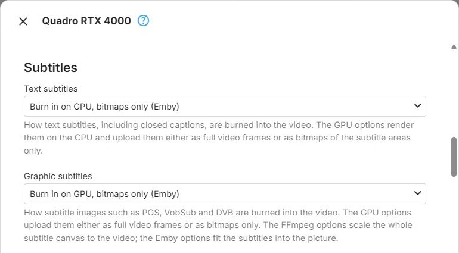

Subtitle Burn-In
Subtitle Burn-In per Device
When an app cannot display the subtitles that were selected, they have to be burned into the video: they become part of the picture, which always requires transcoding - see Why Is My Media Transcoding?. How that is done is configured per device, in the Subtitles section of the device's configuration dialog
- see Device Configuration and GPU Config.
The section has two selections:
- Text subtitles - for text-based subtitles such as SRT and ASS, including closed captions
- Graphic subtitles - for subtitle images such as PGS, VobSub and DVB
A selection is only shown when the device's context type offers at least one way of burning in that kind of subtitles.

Choices
The choices differ in where the subtitles are combined with the video - on the CPU or on the GPU - and in whose subtitle processing does it: FFmpeg's own, or Emby's. They are listed in the order the dropdowns show them; which of them a context type offers is listed below.
Burn in on GPU, bitmaps only (Emby) - the subtitles are rendered on the CPU, and only the images of the subtitle areas are uploaded to the GPU, which combines them with the video. The video stays on the GPU throughout, and the least data is transferred.
Burn in on GPU, full frames (Emby) - the subtitles are rendered on the CPU into full-size transparent frames, which are uploaded to the GPU and combined with the video there. The video stays on the GPU, but a full frame is uploaded for each subtitle frame.
Burn in on GPU, full frames (FFmpeg) - Graphic subtitles only. As above, using FFmpeg's own subtitle handling, which scales the whole subtitle canvas to the video.
Burn in on CPU (Emby) - the subtitles are burned in on the CPU, using Emby's subtitle processing. When the video was decoded on the GPU, each frame is copied to the CPU for this and uploaded again for encoding. For text subtitles this choice also handles closed captions and ARIB captions; for graphic subtitles it fits the subtitles into the picture.
Burn in on CPU (FFmpeg) - the subtitles are burned in on the CPU, using FFmpeg's own subtitle filters, with the same copying between GPU and CPU. It cannot burn in closed captions or ARIB captions, and for graphic subtitles it scales the whole subtitle canvas to the video.
Skip this configuration - the device node is not used for operations that have to burn in this kind of subtitles. Evaluation moves on to the next node in the graph - see Graph Evaluation.
Choices per Context Type
| Context types | Text subtitles | Graphic subtitles |
|---|---|---|
| Nvidia CUDA, QSV on D3D11, QSV on VAAPI, VAAPI (Intel), AMF on Vulkan, Vulkan (Nvidia), Vulkan (Intel), Vulkan (AMD), Rockchip | all choices | all choices |
| AMF on D3D11 | GPU bitmaps only, and both CPU choices | GPU bitmaps only, and both CPU choices |
| VideoToolbox, Software, MediaCodec | both CPU choices | both CPU choices |
The default is the first choice a context type offers: Burn in on GPU, bitmaps only (Emby) where it is available, otherwise Burn in on CPU (Emby).
Avoiding Burn-In
Burning in subtitles is always more work than delivering them to the app separately. Graphic subtitles can often be avoided by converting them to text with OCR Conversion; for text subtitles embedded in the video, see On-the-Fly Subtitle Extraction.
Further Reading
Subtitle overlay pipeline fundamentals
Hardware subtitle overlay pipeline
Copy-back video pipelines